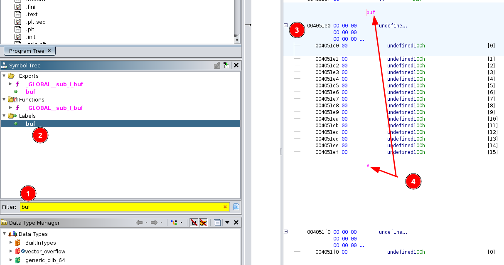
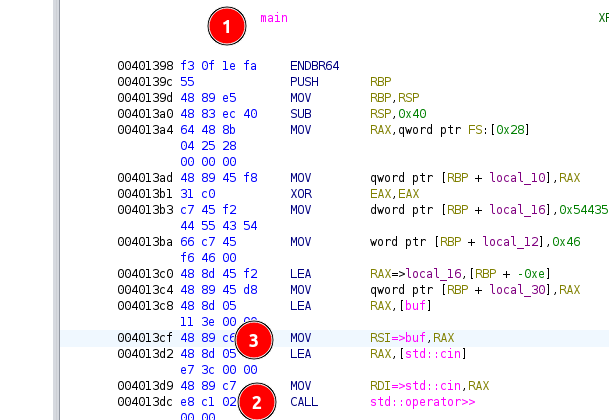

Vector overflow
Prologue¶
Difficulty: beginner
Category: binary exploitation
Solved: 239
Description
Please overflow into the vector and control it!
Input files:
vector_overflow.c
1 2 3 4 5 6 7 8 9 10 11 12 13 14 15 16 17 18 19 20 21 22 23 24 25 26 27 28 29 30 31 32 33 34 35 | |
NB:
-
Following indices bases system is used to avoid ambiguity. Whenever element of a collection is referenced by number, 0-based index implied.
Ie, element
0of list[1, 2, 4, 8, 16]is1, Element3is8.When element is reference in explanation with word (first, third...), 1-based system is implied.
Ie, first character of string
Hello World!isH, fifth iso.
- Solution code was redacted for readability purposes. Due to time pressure during the competition I was using a lot of one-letter variables and questionable code structure.
- I am using gdb with pwndbg plugin
My struggle¶
Analysis¶
This is one of the most straightforward challenges that is a good introduction to binary exploitation.
First review source code to understand what the program intends to do and where is vulnerability we can target:
| trimmed source code with explanaition | |
|---|---|
1 2 3 4 5 6 7 8 9 10 11 12 13 14 15 16 17 18 19 20 21 22 23 | |
So, in order to execute win() we should change variable v to be DUCTF, notice how global variables are next to each other?
v is declared right after buf, this means that there is a good chance that in memory they also will be placed sequentially
one after another.
We can test this theory and find locations of global variables by inspecting the binary. First, lets check its general information:
1 2 3 4 5 6 7 8 9 | |
There are two tools we can use find locations of variable:
-
open the binary in ghidra
-
given symbols are not stripped, we can search them by name: 
On the image:
- 1 search for variable
bufin symbol tree - 2 select it in the list
- 3 once selected the main view show address of the variable
004051e0 - 4 ghidra also annotates variable names in the main view we can see both
bufandvright after it( address004051f0)
- 1 search for variable
-
second option to find out address with ghidra is through assembly (this works even if binary symbols are stripped): 
On the image:
- 1 go to function
main(ghidra usually detects it automatically, sometimes depending of source language it can be calledentryor have a standard language wrapper) - 2 find
calltooperator>>onstd::cin - 3 work up from
calland check how registers initialised before the call, we can see RSI is initialised with address to a global variablebuf(if there would be no symbols we would seeDATA_004051e0instead ofbufwhich doesn't change much). Similarly, we could find below in assembly access to another global variable (vorDATA_004051f0) when comparing of content happens.
- 1 go to function
-
-
Launch the binary in gdb and inspect memory
- find variables by name
1 2 3 4 5 6 7
$ gdb ./vector_overflow (gdb) b main # breakpoint at main function (gdb) r # run executable till it hits breakpoint (gdb) p &buf # check address of variable buf $1 = (<data variable, no debug info> *) 0x4051e0 <buf> (gdb) p &v # check address of variable v $2 = (<data variable, no debug info> *) 0x4051f0 <v>
- inspect memory
1 2 3 4 5 6 7 8 9 10 11 12 13 14 15 16 17
$ gdb ./vector_overflow (gdb) b main # breakpoint at main function (gdb) r # run executable till it hits breakpoint (gdb) # step with `ci` through the code till we will be asked to enter input myteststring # our input that saved into buffer (gdb) search myteststring # scan memory where our string was saved (requires pwndbg plugin) Searching for value: 'myteststring' vector_overflow 0x4051e0 'myteststring' # found our global variable at address 0x4051e0 [heap] 0x4182d0 'myteststring\n' (gdb) x/16c 0x4051e0 # read 16 characters from address 0x4051e0 (remember type of variable buf is char[16]) 0x4051e0: 'm' 'y' 't' 'e' 's' 't' 's' 't' 'r' 'i' 'n' 'g' '0' '0' '0' '0' (gdb) x/2gx 0x4051f0+16 # read two giant (8byte) numbers in hex format starting after buf ends 0x4051f0 <v>: 0x00000000004182b0 0x00000000004182b5 # vector in represented in memory as two consecutive pointers to start and end of content (gdb) print 0x00000000004182b5 - 0x00000000004182b0 # we can check length is 5 $3 = 5 (gdb) x/5c 0x00000000004182b0 # read 5 characters from the start of the vector data 0x4182b0: 88 'X' 88 'X' 88 'X' 88 'X' 88 'X' # 88 is ascii value of 'X' (remember in source code we have `vector v = {'X', 'X', 'X', 'X', 'X'})
- find variables by name
Exploit¶
So, given program reads as much data as we provide, we are not limited to 16 characters, we can overflow into v and change vector
to DUCTF. To reiterate this is memory layout that we normally have (see analysis section above for more detailed explanation of each element):
1 2 3 4 5 | |
Note that pointer addresses that we saw before (0x00000000004182b0, 0x00000000004182b5) are written in little endian format (reversed of
what we used to). For example value 0x0055000004000201 is stored as 0x01 0x02 0x00 0x04 0x00 0x00 0x55 0x00 in memory.
Our goal is to achieve following memory state:
1 2 3 4 5 | |
If all required bytes were ascii printable it would be easy to enter them manually, but they don't so I used pwntools. This is CTF framework for binary exploitation, its only "disadvantage" is it has all features you can think of, so it can be overwhelming sometimes.
1 2 3 4 5 6 7 | |
00000000 44 55 43 54 46 00 00 00 00 00 00 00 00 00 00 00 │DUCT│F···│····│····│
00000010 e0 51 40 00 00 00 00 00 e5 51 40 00 00 00 00 00 │·Q@·│····│·Q@·│····│
Full script to launch binary (or connect to CTF server if REMOTE param provided) and send the payload:
solve.py
1 2 3 4 5 6 7 8 9 10 11 12 13 14 15 16 17 18 19 20 21 22 23 24 25 26 | |
Epilogue¶
- Official website: https://downunderctf.com/
- Official writeups: https://github.com/DownUnderCTF/Challenges_2024_Public